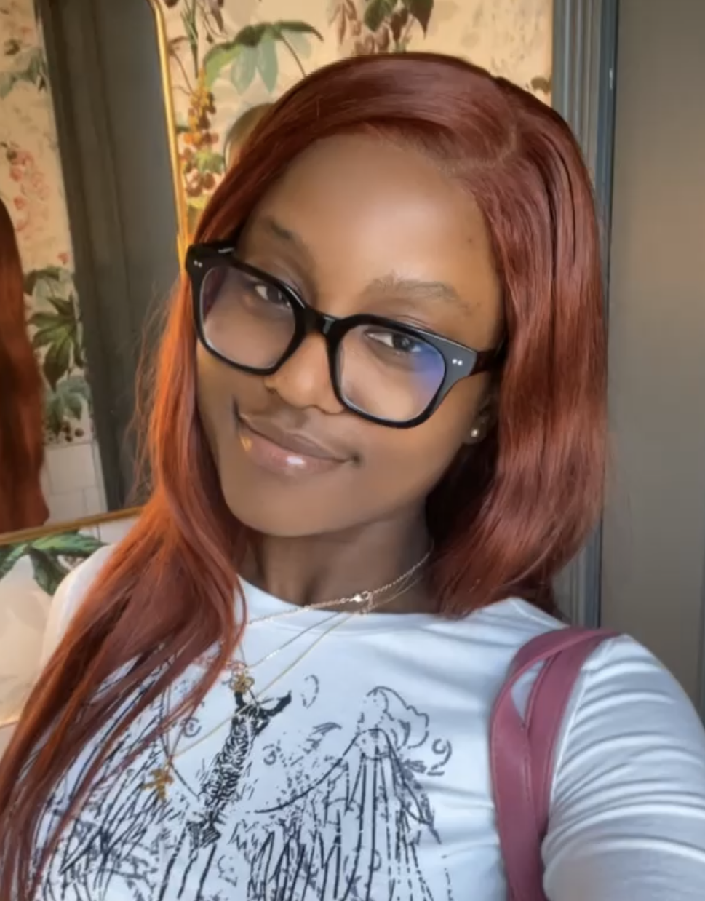

Software Engineering Student
Front-End Developer

Hello! I am Awurama Nyarko. Welcome to my page!
I'm a third-year Software Engineering student at McMaster University, fueled by curiosity and a drive to make a difference in the tech world. Beyond coding, I'm passionate about creating innovations that positively impact both the industry and society. I'm on a mission to work on cutting-edge projects, applying my strong foundation in software development and problem-solving to real-world scenarios. I built this webpage, and I encourage you to explore it along with my other projects to recognize some of my skills. I'm currently seeking co-op positions, eager to bring my expertise and fresh perspective to a dynamic team. I'm enthusiastic about learning, growing, and tackling new challenges, all while nurturing a deep passion for the field. Let's connect and explore opportunities to collaborate for a more innovative and sustainable future.